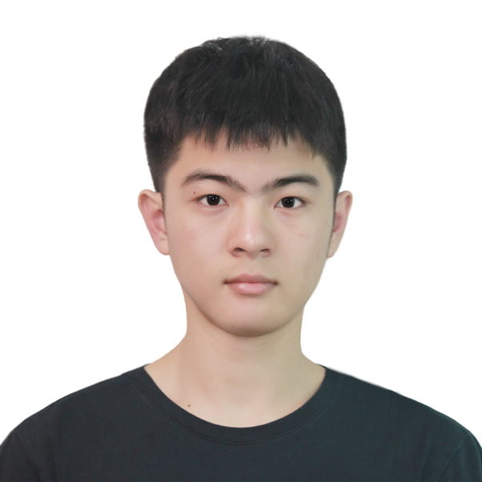

Zihua Sun
M.S.E. in Electrical Engineering @ University of Pennsylvania
Email
LinkedIn
Education
University of Pennsylvania
Expected 2026
M.S.E. in Electrical Engineering
University of Edinburgh
2021 – 2024
B.Eng. (Hons) in Electronics and Electrical Engineering | First Class (A3)
Research Experience
Rehabilitation Robotics Laboratory
2025 – Present
Research Assistant | University of Pennsylvania
Collaborating on EEG-based BCI pipelines for decoding action observation (AO) and motor imagery (MI) intentions.
Implementing multi-channel EEG preprocessing and feature extraction workflows.
Integrating neural signals with robotic systems for closed-loop action visualization.
Epidural Electrical Stimulation (EES) Research
Summer 2025
Summer Researcher | Zhejiang University & Second Affiliated Hospital
Analyzed 16-channel EMG datasets for spinal cord injury (SCI) rehabilitation.
Built MATLAB/Python pipelines and interactive visual parameter adjustment tools, improving efficiency by 30%.
BCI for Robotic Fist Control
2024 – 2025
Final Year Project | University of Edinburgh
Developed a deep learning EEG decoder using enhanced EEGNet; improved accuracy from 43% to 60%.
Master's Thesis
Foundation Models for EEG Decoding
2025 – Present
Designing an end-to-end BCI system leveraging EEG foundation models (e.g., LaBraM) for cross-subject decoding.
Building a pseudo-real-time streaming pipeline to evaluate latency and stability in human-machine interaction.
Industry Experience
Hikvision
Summer 2024
Engineering Project Testing Intern
Conducted functional and reliability testing for new engineering products.
Collaborated with R&D to resolve defects and developed structured testing procedures.
Technical Skills
Python (PyTorch)
MATLAB
C/C++
Verilog / FPGA
EEG/EMG Processing
Machine Learning
PCB Prototyping
Signal Processing